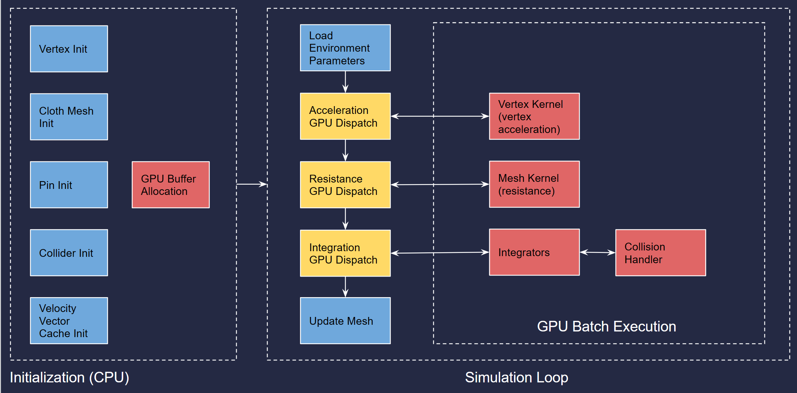

GPU Mass-Spring Cloth Simulation System for Unity
Introduction & Motivation
Physics simulation is a important skill, but very challenging for technical artists, as it requires high level of proficiency in mathematics and programming. This was originally the course project of my course 15664: Technical Animation taken at CMU. I decided to take this chance to make an extensible cloth simulation system for my future games. The project demonstrate my understanding in Unity development, GPU side development and programming as well as my mathematical background in physics simulation and animation.
Demo
Main Features
- Size and Resolution Control
- Refraction Control
- Rigid Body Parameters
- Mass-Spring Parameters
- Gravity
- Wind and Air Resistance
- Collision and Pinning
- Different Integrators
- GPU Acceleration
Architecture
Implementation
Cloth Model
The cloth simulation is based on mass spring system, with 3 types of spring pairs shown by the graph. When the cloth is deformed, the internal force is calculated based on the spring forces.
Handling Collisions and Pins
I implemented GPU based collision detection using ray-object intersection detection. It currently supports unity's inherent sphere objects and can read the transform automatically from the sphere. The ray is derived from the current and next position of a vertex. If the ray reaches to the inside of the sphere, I calculate P and bring the vertex back to P. I also reflect the velocity based on surface normal and multiply with Cor for energy loss; Pins are special spheres that can fix the position of vertices within it. With Pins I can achieve the flag effect easily.

Drag Models
I also implemented wind resistance to the cloth based on the aerodynamics equations,where the velocity is the relative velocity between the vertex and the wind, and the A value is the surface area x sine of the wind angle. The parameter WindVelocity specifies the to properties.
Integrators
I implemented four different integrators: Euler, Implicit Euler, Leap Frog and Verlet: the Euler's are more traditional ones and the rest are more complex ones. But as physics simulation is a complex system, there is really no "best method", different integrators excels in different scenarios.
Euler
yn+1 = yn + h · f(tn, yn)
Implicit Euler:
yn+1 = yn + h · f(tn+1, yn+1)
Leap Frog:
vn+1/2 = vn + (h / 2) · a(tn, yn)
yn+1 = yn + h · vn+1/2
vn+1 = vn+1/2 + (h / 2) · a(tn+1, yn+1)
Verlet
yn+1 = 2yn - yn-1 + h2 · a(tn, yn)
GPU - CPU communication
Unity uses "Compute Shader" for GPU coding and use "Compute Buffer" for GPU-CPU communication. Unlike "Surface Shaders" that only run within a render pipeline, the Compute Shader allows us to execute whatever code we want on GPU. As Unity is notoriously infamous for its poor documentation and it was the first time for me to use it, I went through all the videos and forums for tutorials, and also read through a bunch of GPU codes on Github for reference....
Most of the computation is done in GPU. On CPU side, it initializes the mesh and the parameters, packs them up and sends the data to GPU for calculation. Then it retrieves the data to update the mesh. On GPU side, I created three Kernels: the cloth model kernel, the wind resistance kernel and the integrator kernel, where the integrator kernel also handles collisions. The reason for that is the wind resistance kernel requires different number of threads (#triangles) than the other two (#vertices).
For buffers, I created position buffer, force buffer, velocity buffer and triangle buffer
for each type of data, Also Collider and pin buffer to dynamically change the state of
colliders and pins in runtime.
As the GPU program knows only the "current state" of vertices, I also added a custom buffer
for storing preview state of either acceleration or position required by leap-frog and
Verlet integrators.